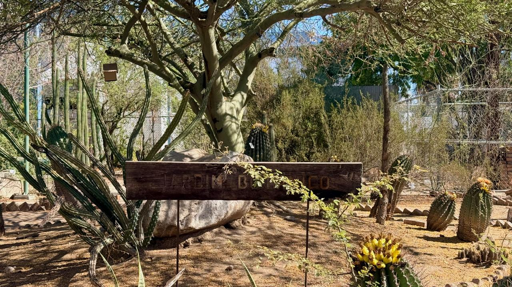
Jardín Botánico
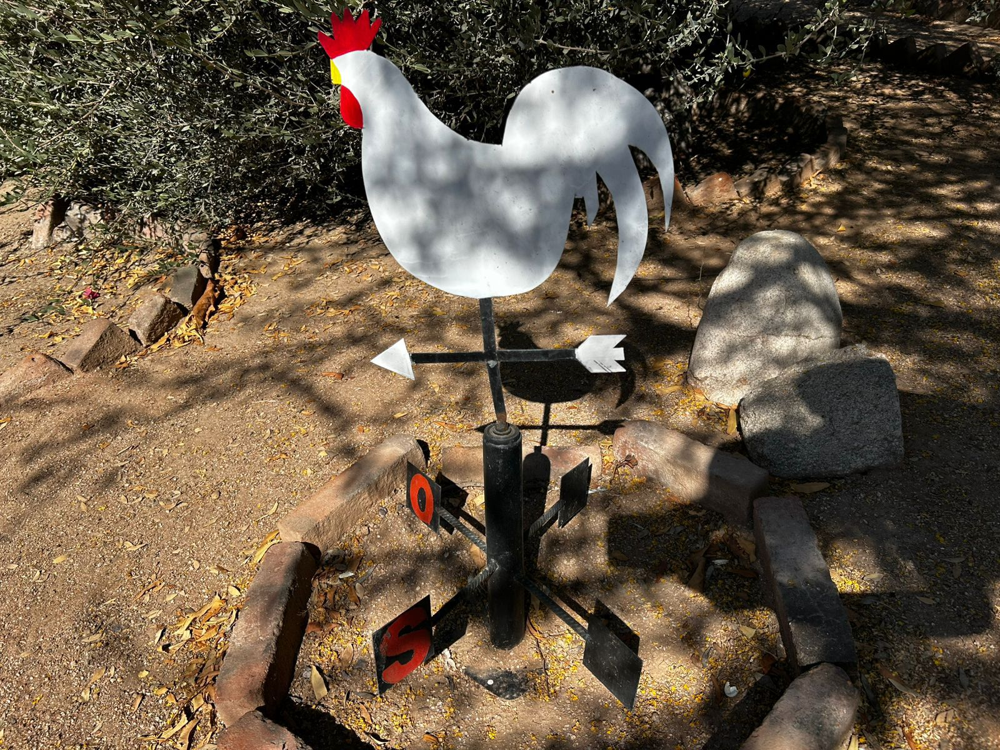
Coordenadas
Permiten localizar y estudiar las plantas con precisión.

Stenocereus
Un género de cactus columnares comúnmente conocidos como órganos o pitayos


Permiten localizar y estudiar las plantas con precisión.
Un género de cactus columnares comúnmente conocidos como órganos o pitayos
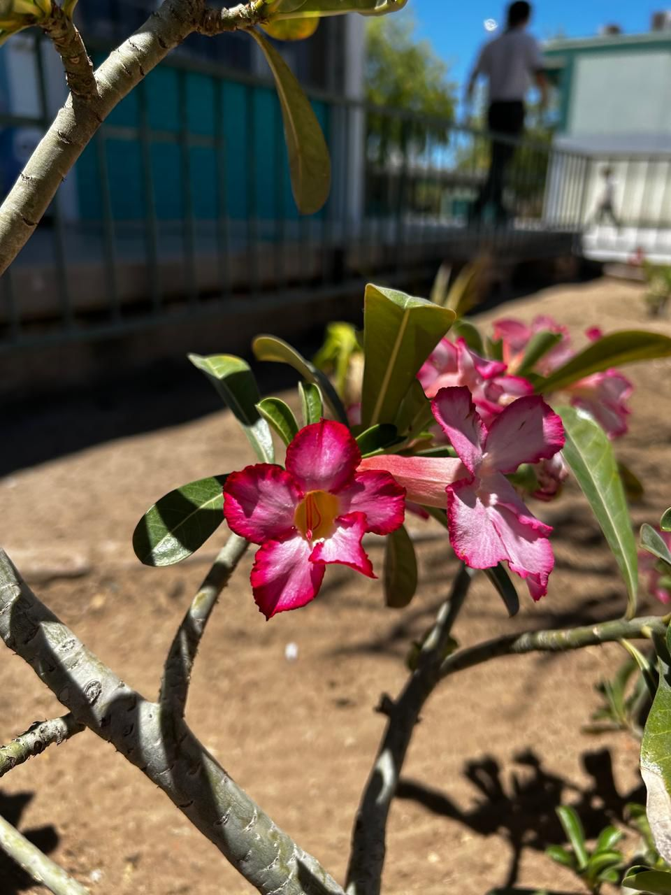
Es conocida por sus llamativas flores y su capacidad para almacenar agua en su tronco.
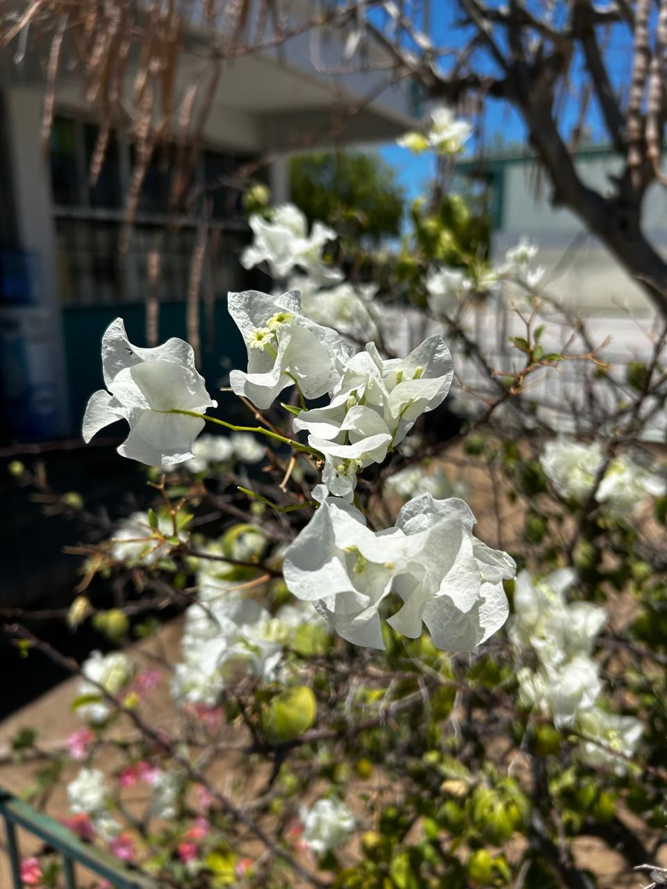
Es una planta o arbusto leñoso popular por su valor ornamental y abundancia de flores.
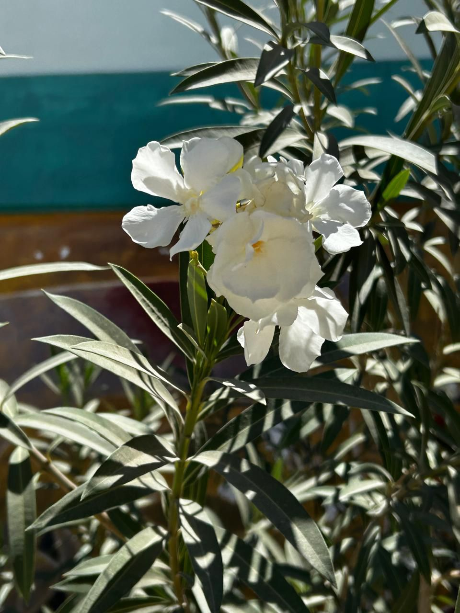
Un arbusto ornamental muy popular por sus vistosas flores blancas.
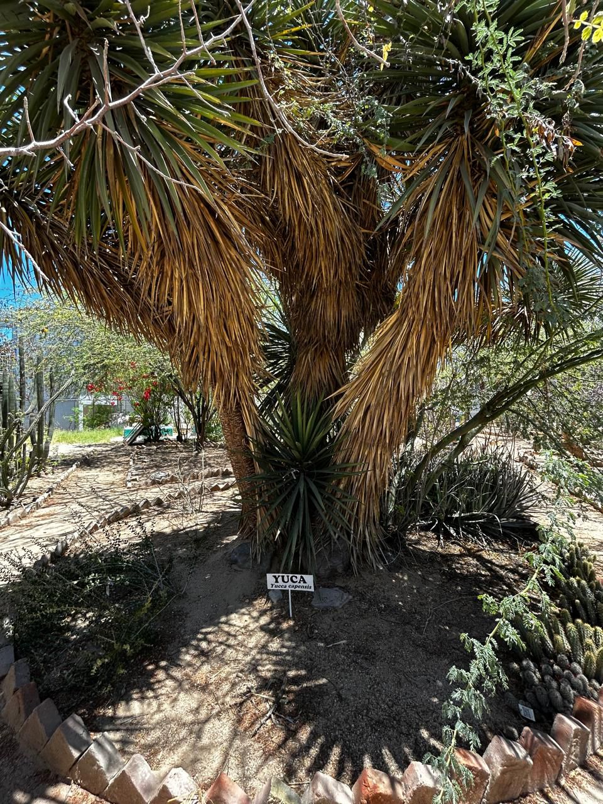
Esta es una Yucca filifera, una especie de planta arborescente nativa de México, frecuentemente conocida como palma pita o izote.Es una planta imponente que puede alcanzar hasta 10 metros de altura, desarrollando un tronco grueso y a menudo múltiple.
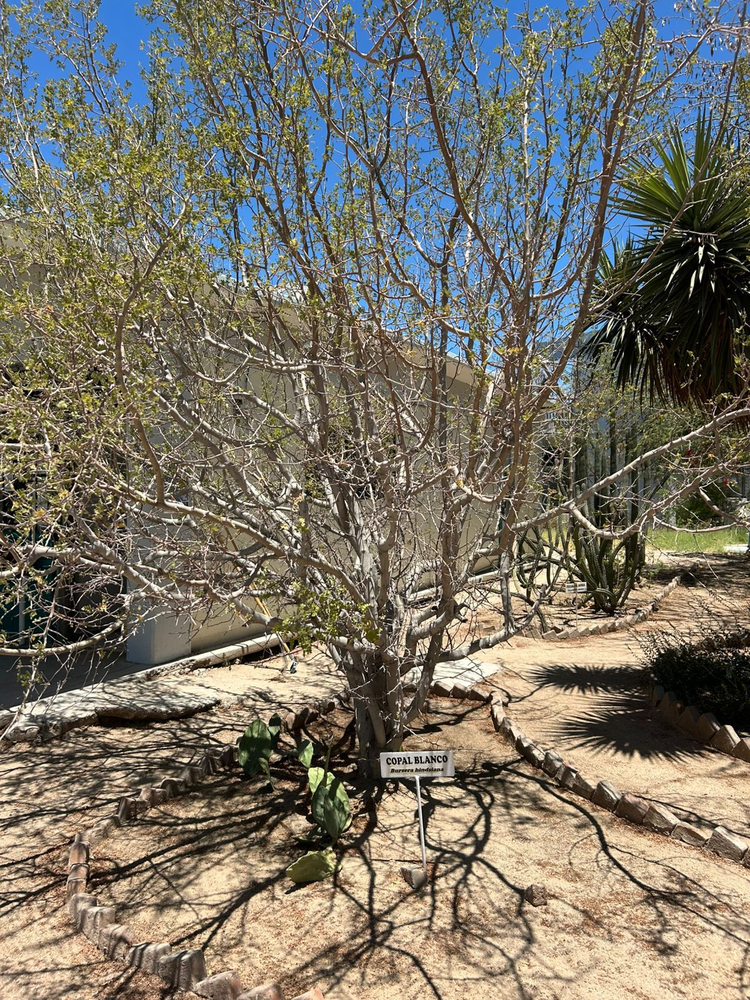
Esta especie es una planta suculenta y xerófita, perteneciente a la familia de las cactáceas, que se caracteriza por sus tallos planos y carnosos llamados cladodios o pencas.
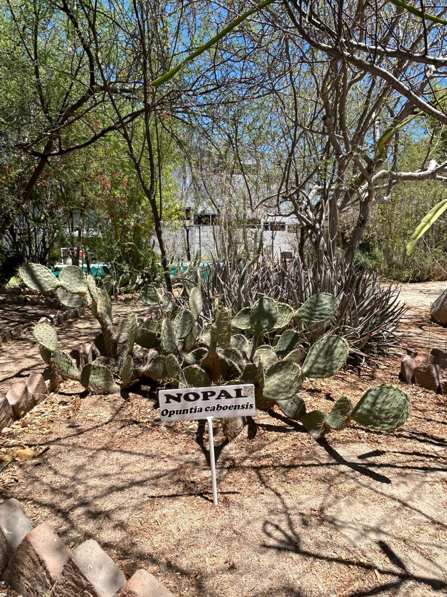
Este es un nopal de la especie Opuntia caboensis, una planta nativa de la península de Baja California.
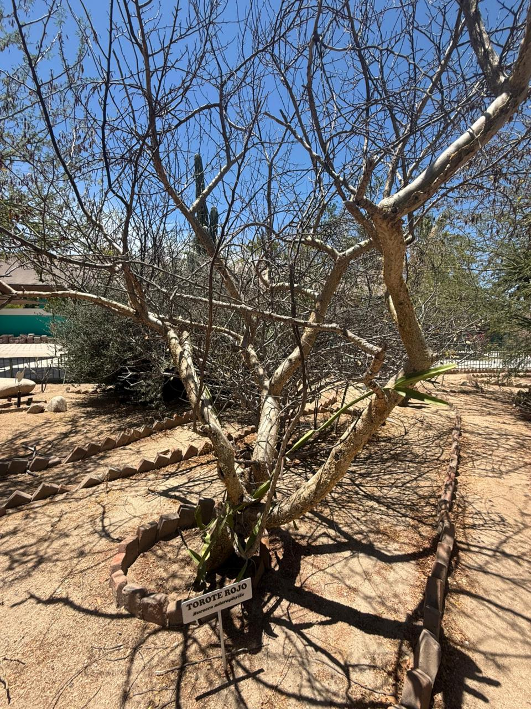
El árbol en la imagen es un Torote Rojo (Bursera microphylla), una especie nativa de los desiertos del noroeste de México y el suroeste de Estados Unidos.
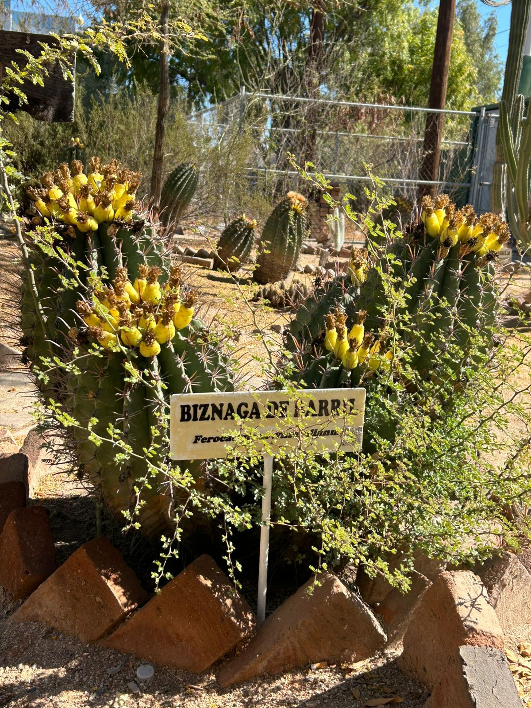
Esta es una Biznaga de Barril, comúnmente del género Ferocactus, que presenta frutos amarillos comestibles característicos.
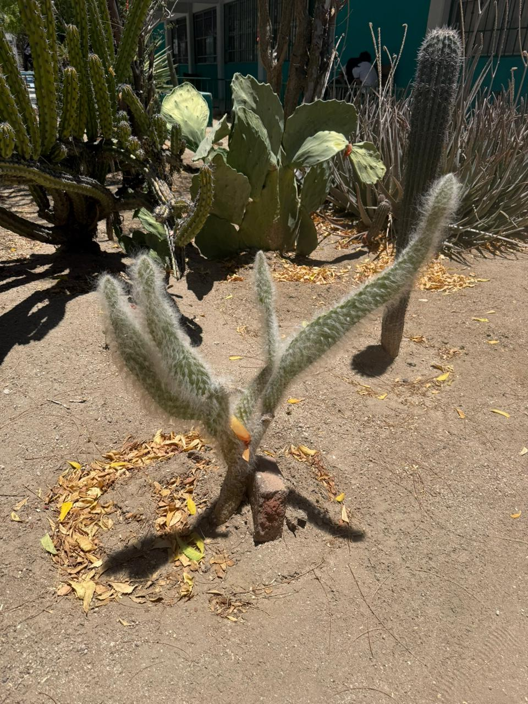
Esta planta es comúnmente conocida como nopal viejito (Opuntia senilis).Apariencia: Se caracteriza por tener tallos cubiertos de largos pelos blancos que parecen una barba o cabellera.